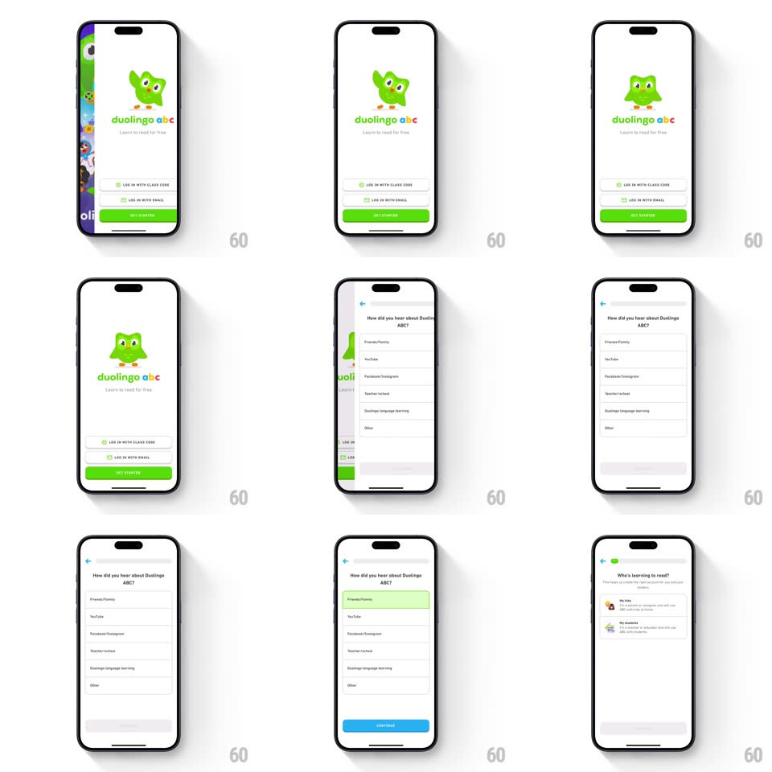

Media
Frame-by-frame

Rebuild this interaction 1:1: Duolingo ABC's welcome flow - a waving Duo mascot over the "duolingo abc" wordmark with "LOG IN WITH CLASS CODE" / "LOG IN WITH EMAIL" ghost buttons and a green GET STARTED, then slides into a "How did you hear about Duolingo ABC?" list where tapping a row highlights it green and lights up CONTINUE.

Rebuild this interaction 1:1: Duolingo ABC's welcome flow - a waving Duo mascot over the "duolingo abc" wordmark with "LOG IN WITH CLASS CODE" / "LOG IN WITH EMAIL" ghost buttons and a green GET STARTED, then slides into a "How did you hear about Duolingo ABC?" list where tapping a row highlights it green and lights up CONTINUE. ## Integration Integration: stack-agnostic spec - springs given as stiffness/damping, timed motions as duration + curve; map every value to your framework and animation library of choice. ## Scene Welcome: colorful splash into a white screen - Duo waving above the multicolor "duolingo abc" wordmark and "Learn to read for free" tagline, two ghost login buttons and a full-width green "GET STARTED". Survey screen: back chevron, "How did you hear about Duolingo ABC?" title, stacked option rows (Friends/Family, YouTube, Facebook/Instagram, Teacher/school, Duolingo language learning, Other), grayed CONTINUE pinned bottom. Then "Who's learning to read?" profile rows. ## Motion spec Pattern: mascot welcome into progressive-disclosure survey. - Welcome entry: Duo pops in (scale 0.7 -> 1, spring ~340/16, one bounce) and waves (arm rotate +-12deg, 2 cycles, 900ms); wordmark letters stagger up (20px rise, 250ms, 40ms apart); buttons fade in last. - GET STARTED press: squashes to 0.95 with a darker green (120ms) and the survey screen slides in from the right (spring ~320/24) while the welcome slides out left. - Row tap: the row's fill wipes green left-to-right (200ms), its text staying dark; CONTINUE ignites from gray to blue (color + slight scale 1.02 pulse, 250ms) - the button waking up IS the affordance. - CONTINUE press slides the next question in (same spring); the top progress segment extends green. - Back chevron reverses the slide; the previous selection is preserved and still highlighted. ## Calibration - One selection at a time - tapping another row moves the green wipe, never accumulates. - Ghost buttons stay visually quiet so GET STARTED owns the welcome screen. ## Reduced motion Crossfades between screens; row highlight appears without wipe. ## Don't miss - Duo's wave happens ONCE on entry - it's a hello, not a loop. - CONTINUE starts disabled-looking (light gray on gray) and its ignition is the reward for answering.